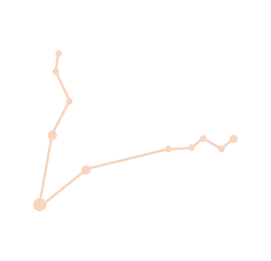
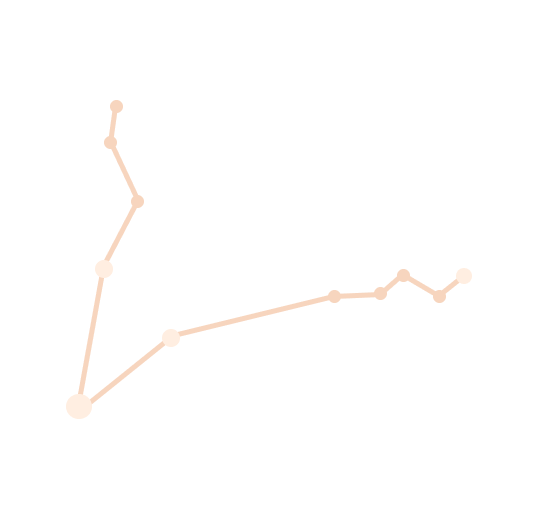

PISCES
Pisces is a zodiacal constellation in the northern sky between Aries and Aquarius, at about 1 hour right ascension and 15° north declination.
In astrology, Pisces is the 12th sign of the zodiac, considered as governing the period from about February 19 to about March 20.
Its representation as two fish tied together is usually related to the Greek myth of Aphrodite and Eros.
Element: Water
Ruling Planet: Neptune
Birth Stone: Aquamarine
Zodiac Symbol: Fish


Best Compatible Signs With Leos:


Least Compatible Signs With Leos: